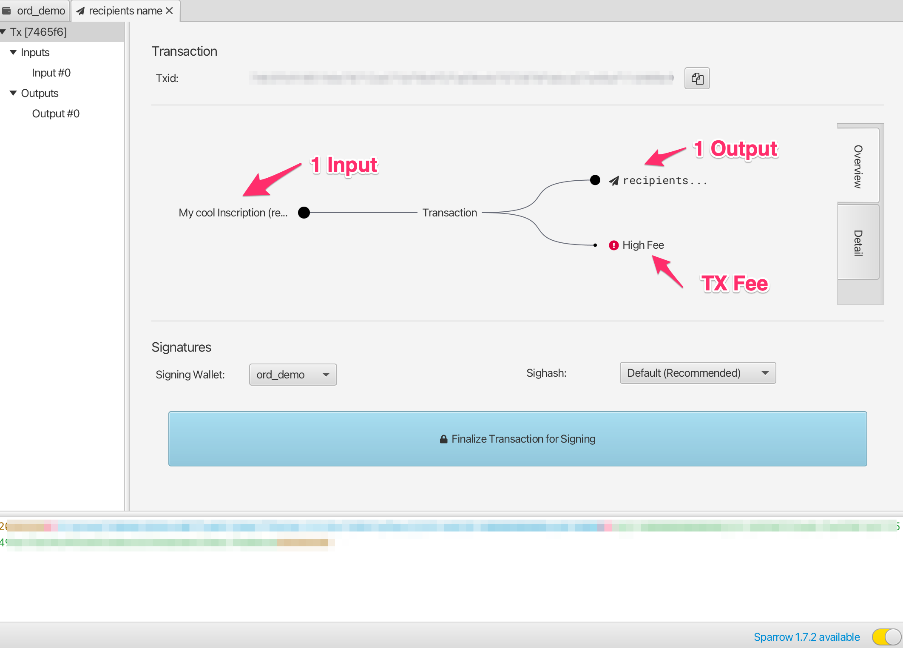

Panimula
This handbook is a guide to ordinal theory. Ordinal theory concerns itself with gros, giving them individual identities and allowing them to be tracked, transferred, and imbued with meaning.
Gros, not groestlcoin, are the atomic, native currency of the Groestlcoin network. One groestlcoin can be sub-divided into 100,000,000 gros, but no further.
Ordinal theory does not require a sidechain or token aside from Groestlcoin, and can be used without any changes to the Groestlcoin network. It works right now.
Ordinal theory imbues gros with numismatic value, allowing them to be collected and traded as curios.
Individual gros can be inscribed with arbitrary content, creating unique Groestlcoin-native digital artifacts that can be held in Groestlcoin wallets and transferred using Groestlcoin transactions. Inscriptions are as durable, immutable, secure, and decentralized as Groestlcoin itself.
At iba pa na hindi pangkaraniwang gamit nito ay: mga off-chain colored-coin, pampublikong imprastraktura ng key na may key rotation, isang desentralisadong kapalit ng DNS. Gayunpaman, sa ngayon, ang mga ganitong espekulasyon ng paggamit ay haka-haka, at umiiral lamang sa isipan ng mga “fringe ordinal theorists”.
Para sa higit pang mga detalye sa Ordinal Theory, tingnan ang pangkalahatang-ideya
Para sa higit pang mga detalye sa mga inskripsiyon, tingnan ang mga inskripsiyon.
Kapag handa ka na, isang magandang lugar na maaring magsimula ay ang mga inskripsiyon, isang kakaibang uri ng digital artifact na pinagana ng Ordinal Theory.
Mga Link
Pangkalahatang-ideya ng Ordinal Theory
Ordinals are a numbering scheme for gros that allows tracking and transferring individual gros. These numbers are called ordinal numbers. Gros are numbered in the order in which they're mined, and transferred from transaction inputs to transaction outputs first-in-first-out. Both the numbering scheme and the transfer scheme rely on order, the numbering scheme on the order in which gros are mined, and the transfer scheme on the order of transaction inputs and outputs. Thus the name, ordinals.
Technical details are available in the BIP.
Ordinal theory does not require a separate token, another blockchain, or any changes to Groestlcoin. It works right now.
Ang mga ordinal numbers ay may ilang magkakaibang representasyon:
-
Integer notation:
2099994106992659The ordinal number, assigned according to the order in which the gro was mined. -
Decimal notation:
3891094.16797The first number is the block height in which the gro was mined, the second the offset of the gro within the block. -
Degree notation:
3°111094′214″16797‴. We'll get to that in a moment. -
Percentile notation:
99.99971949060254%. The gro's position in Groestlcoin's supply, expressed as a percentage. -
Name:
satoshi. An encoding of the ordinal number using the charactersathroughz.
Arbitrary assets, such as NFTs, security tokens, accounts, or stablecoins can be attached to gros using ordinal numbers as stable identifiers.
Ordinals is an open-source project, developed on GitHub. The project consists of a BIP describing the ordinal scheme, an index that communicates with a Groestlcoin Core node to track the location of all gros, a wallet that allows making ordinal-aware transactions, a block explorer for interactive exploration of the blockchain, functionality for inscribing gros with digital artifacts, and this manual.
Rarity
Humans are collectors, and since gros can now be tracked and transferred, people will naturally want to collect them. Ordinal theorists can decide for themselves which gros are rare and desirable, but there are some hints…
Groestlcoin has periodic events, some frequent, some more uncommon, and these naturally lend themselves to a system of rarity. These periodic events are:
-
Blocks: A new block is mined approximately every 1 minute, from now until the end of time.
-
Difficulty adjustments: Every 2016 blocks, or approximately every 1.5 days, the Groestlcoin network responds to changes in hashrate by adjusting the difficulty target which blocks must meet in order to be accepted.
-
Halvings: Every 1,050,000 blocks.
-
Cycles: Every 6 * 1,050,000 blocks.
Nagbibigay ito sa atin ng mga sumusunod na antas ng rarity:
common: Any gro that is not the first gro of its blockuncommon: The first gro of each blockrare: The first gro of each difficulty adjustment periodepic: The first gro of each halving epochlegendary: The first gro of each cyclemythic: The first gro of the genesis block
Which brings us to degree notation, which unambiguously represents an ordinal number in a way that makes the rarity of a gro easy to see at a glance:
A°B′C″D‴
│ │ │ ╰─ Index of gro in the block
│ │ ╰─── Index of block in difficulty adjustment period
│ ╰───── Index of block in halving epoch
╰─────── Cycle, numbered starting from 0
Ang Ordinal theorists ay kadalasang gumagamit ng mga termino "hour", "minute", "second", at "third" for A, B, C, and D, ayon sa pagkakabanggit.
Now for some examples. This gro is common:
1°1′1″1‴
│ │ │ ╰─ Not first gro in block
│ │ ╰─── Not first block in difficulty adjustment period
│ ╰───── Not first block in halving epoch
╰─────── Second cycle
This gro is uncommon:
1°1′1″0‴
│ │ │ ╰─ First gro in block
│ │ ╰─── Not first block in difficulty adjustment period
│ ╰───── Not first block in halving epoch
╰─────── Second cycle
This gro is rare:
1°1′0″0‴
│ │ │ ╰─ First gro in block
│ │ ╰─── First block in difficulty adjustment period
│ ╰───── Not the first block in halving epoch
╰─────── Second cycle
This gro is epic:
1°0′1″0‴
│ │ │ ╰─ First gro in block
│ │ ╰─── Not first block in difficulty adjustment period
│ ╰───── First block in halving epoch
╰─────── Second cycle
This gro is legendary:
1°0′0″0‴
│ │ │ ╰─ First gro in block
│ │ ╰─── First block in difficulty adjustment period
│ ╰───── First block in halving epoch
╰─────── Second cycle
And this gro is mythic:
0°0′0″0‴
│ │ │ ╰─ First gro in block
│ │ ╰─── First block in difficulty adjustment period
│ ╰───── First block in halving epoch
╰─────── First cycle
If the block offset is zero, it may be omitted. This is the uncommon gro from above:
1°1′1″
│ │ ╰─ Not first block in difficulty adjustment period
│ ╰─── Not first block in halving epoch
╰───── Second cycle
Rare Gro Supply
Kabuuang Supply
common: 10.4 quadrillionuncommon: 6,929,999rare: 3437epic: 32legendary: 5mythic: 1
Kasalukuyang Supply
common: 8.3 quadrillionuncommon: 745,855rare: 369epic: 3legendary: 0mythic: 1
At the moment, even uncommon gros are quite rare. As of this writing, 745,855 uncommon gros have been mined - one per 25.6 groestlcoin in circulation.
Mga pangalan
Each gro has a name, consisting of the letters A through Z, that get shorter the further into the future the gro was mined. They could start short and get longer, but then all the good, short names would be trapped in the unspendable genesis block.
As an example, 1905530482684727°'s name is "iaiufjszmoba". The name of the last gro to be mined is "a". Every combination of 10 characters or less is out there, or will be out there, someday.
Exotics
Gros may be prized for reasons other than their name or rarity. This might be due to a quality of the number itself, like having an integer square or cube root. Or it might be due to a connection to a historical event, such as gros from block 1,439,424, the block in which SegWit activated, or 10499999999999999°, the last gro that will ever be mined.
Such gros are termed "exotic". Which gros are exotic and what makes them so is subjective. Ordinal theorists are encouraged to seek out exotics based on criteria of their own devising.
Inscriptions
Gros can be inscribed with arbitrary content, creating Groestlcoin-native digital artifacts. Inscribing is done by sending the gro to be inscribed in a transaction that reveals the inscription content on-chain. This content is then inextricably linked to that gro, turning it into an immutable digital artifact that can be tracked, transferred, hoarded, bought, sold, lost, and rediscovered.
Arkeolohiya
Whether or not ordinals are of interest to NFT archaeologists is an open question! Ordinals were in fact created by Gruve-P in 2014 when he mined the Groestlcoin genesis block. In this sense, ordinals, and especially early ordinals, are certainly of historical interest.
Digital Artifacts
Isipin ang isang pisikal na artifact. Ang isang rare na barya, halimbawa, ay itinatago sa loob ng maraming taon sa dilim, lihim na pagkakahawak ng isang Viking hoard, na ngayon ay hinukay mula sa lupa sa pamamagitan ng iyong mga kamay na nakahawak. Ito...
...ay may may-ari. Ikaw. Hangga't pinapanatili mo itong ligtas, walang sinuman ang makakakuha nito mula sa iyo.
...ay kumpleto. Wala itong nawawalang bahagi.
...ay mapapalitan mo lang. Kung ikaw ay isang mangangalakal, at nagpunta ka sa ika-18 siglong Tsina, maaari mong tatakan ito ng iyong chop-mark.
...ay maaari mo itapon. Ang pagbebenta, pangangalakal, o regalo, sa sinumang nais mo.
Ano ang mga digital artifact? Sa madaling salita, sila ang digital na katumbas ng mga pisikal na artifact.
Para maging isang digital na artifact ang isang digital na bagay, dapat itong katulad ng barya mo:
-
Maaaring magkaroon ng mga may-ari ang mga digital artifact. Ang isang numero ay hindi isang digital na artifact, dahil walang sinuman ang maaaring magmay-ari nito.
-
Kumpleto ang digital artifact. Ang isang NFT na nasa off-chain na IPFS o Arweave ay hindi kumpleto, at sa gayon ay hindi isang digital na artifact.
-
Ang mga digital artifact ay permissionless. Ang isang NFT na hindi maaaring ibenta nang hindi nagbabayad ng royalty ay hindi permissionless, at sa gayon ay hindi isang digital artifact.
-
Ang mga digital artifact ay uncensorable. Marahil ay maaari mong baguhin ang isang database entry sa isang sentralisadong ledger ngayon, ngunit maaaring hindi bukas, at sa gayon ang isa ay hindi maaaring maging isang digital artifact.
-
Ang mga digital artifact ay hindi nababago. Ang isang NFT na may upgrade key ay hindi isang digital artifact.
Ang kahulugan ng isang digital artifact ay nilayon upang ipakita kung ano dapat ang mga NFT, kung minsan, at kung ano ang inskripsiyon, ayon sa kanilang likas na katangian.
Inscriptions
Inscriptions inscribe gros with arbitrary content, creating groestlcoin-native digital artifacts, more commonly known as NFTs. Inscriptions do not require a sidechain or separate token.
These inscribed gros can then be transferred using groestlcoin transactions, sent to groestlcoin addresses, and held in groestlcoin UTXOs. These transactions, addresses, and UTXOs are normal groestlcoin transactions, addresses, and UTXOS in all respects, with the exception that in order to send individual gros, transactions must control the order and value of inputs and outputs according to ordinal theory.
Ang modelo ng inscription content ay sa web. Ang isang inskripsiyon ay binubuo ng isang uri ng nilalaman, na kilala rin bilang MIME type, at ang nilalaman mismo ay isang byte string. Ito ay nagbibigay-daan sa nilalaman ng inskripsiyon na maibalik mula sa isang web server, at para sa paglikha ng mga HTML inscriptions na gumagamit at nagbubuo ng nilalaman ng iba pang mga inskripsiyon.
Ang nilalaman ng inskripsiyon ay on-chain, na naka-imbak sa taproot script-path spend scripts. Ang mga script ng Taproot ay may limitasyon sa kanilang nilalaman, at bukod pa rito ay tumatanggap ng witness discount, na ginagawang matipid ang pag-iimbak ang nilalaman ng isang inskripsiyon.
Dahil ang spend ng taproot script ay maaari lamang gawin mula sa mga kasalukuyang taproot output, ang mga inskripsiyon ay ginawa gamit ang isang two-phase commit/reveal procedure. Una, sa commit transaction, isang taproot output na nag-committ sa isang script na naglalaman ng inskripsyon ay nabuo. Pangalawa, sa reveal ng transaksyon, ang output na nilikha ng commit na transaksyon ay ginamit sa pagbayad, na mag-rereveal ng inscription content sa on-chain.
Ang nilalaman ng inskripsiyon ay naka-serialize gamit ang data pushes sa loob ng mga hindi naisagawang kondisyon, na tinatawag na "envelopes". Ang envelopes ay binubuo ng isang OP_FALSE OP_IF ...OP_ENDIF na nag-wawrap sa kahit anong numero ng data pushes. Dahil ang envelopes ay epektibong no-ops, hindi nito binabago ang semantika ng script kung saan kasama ang mga ito, at maaaring isama sa anumang iba pang locking script.
Isang text inscription na naglalaman ng string na "Hello, world!" ay serialized tulad ng sumusunod:
OP_FALSE
OP_IF
OP_PUSH "ord"
OP_PUSH 1
OP_PUSH "text/plain;charset=utf-8"
OP_PUSH 0
OP_PUSH "Hello, world!"
OP_ENDIF
Una ang string na ord ay pushed, upang i-dismbiguate ang mga inskripsiyon mula sa iba pang gamit ng envelopes.
Ang OP_PUSH 1 ay nagpapahiwatig na ang susunod na push ay naglalaman ng content type, at OP_PUSH 0 naman ay nagpapahiwatig na ang mga kasunod na data ay naglalaman ng content mismo. Dapat gumamit ng maraming push data para sa isang malalaking inskripsiyon, dahil ito sa limitasyon ng taproot, na kung saan hindi maaring lumagpas sa 520 bytes ang bawat isang data push.
The inscription content is contained within the input of a reveal transaction, and the inscription is made on the first gro of its input. This gro can then be tracked using the familiar rules of ordinal theory, allowing it to be transferred, bought, sold, lost to fees, and recovered.
Content
Ang data model ng mga inskripsiyon ay isang HTTP response, na nagbibigay-daan sa nilalaman ng inskripsiyon na maipakita gamit ang web server at nang web browser.
Fields
Ang inskripsiyon ay maaring magkaroon ng fields bago ang optional body. Ang bawat field ay binubuo ng dalawang data pushes, isang tag at isang value.
Sa itaas na halimbawa, ang tanging tinukoy na field ay content-type, na may tag na 1, na ang halaga ay ang uri ng MIME ng body (text/plain;charset=utf-8).
Ang simula ng body at dulo ng mga fields ay mayroong isang walang laman na data push.
Ang mga hindi unkown tag ay sinusuri depende sa kung even o odd ang mga ito, na sumusunod sa panuntunang "it's okay to be odd" na ginagamit ng Lightning Network.
Ang mga tag na ginagamit para sa fields ay maaaring makaapekto sa pag-create, paunang pagtatalaga, o paglipat ng isang inskripsiyon. Kaya, ang mga inskripsiyon na unknown at kahit na ang fields ay dapat na ipakita bilang "unbound", iyon ay, walang lokasyon.
Odd tags ay hindi nakakaapekto sa paggawa, paunang pagtatalaga, o paglilipat, gaya ng karagdagang metadata, at sa gayon ay ligtas na huwag pansinin.
Inscription IDs
Ang nilalaman ng inskripsyon ay nakapaloob sa input ng isang naka-reveal na transaksyon. Upang natatanging makilala ang mga ito, binibigyan sila ng ID, tulad ng:
521f8eccffa4c41a3a7728dd012ea5a4a02feed81f41159231251ecf1e5c79dai0
Ang bahagi sa harap na i ay ang transaction ID (txid) ng reveal na transaksyon. Ang numero pagkatapos ng i ay tumutukoy sa index (nagsisimula sa 0) ng mga bagong inskripsiyon ng transaksyon.
Maaaring matatagpuan ang mga inskripsiyon sa iba't ibang input, sa loob ng parehong input o kumbinasyon ng pareho. Sa anumang kaso ang order ay madaling makita, dahil ang parser nage-scan sa mga input nang sunud-sunod at hahanapin ang lahat ng inskripsiyon na may envelopes.
| Input | Inscription Count | Indices |
|---|---|---|
| 0 | 2 | i0, i1 |
| 1 | 1 | i2 |
| 2 | 3 | i3, i4, i5 |
| 3 | 0 | |
| 4 | 1 | i6 |
Sandboxing
Ang mga inskripsiyon na gaya ng HTML at SVG ay nasa-sandbox upang maiwasan ang ma-reference sa off-chain content, sa gayo'y pinapanatili ang mga inskripsiyon na hindi nababago at self-contained.
Nagagawa ito sa pamamagitan ng pag-load sa mga HTML at SVG na inskripsiyon sa loob iframes na may sandbox na katangian, pati na rin ang pag-serve ng nilalaman ng inskripsiyon na may Content-Security-Policy sa header.
Metadata
Ang iscriptions ay maaring magkaroon ng CBOR metadata, na naka-store bilang data pushes sa fields na may tag 5. Dahil limitado ang data pushes sa 520 bytes, Ang metadata na mas mahaba sa 520 byte ay dapat hatiin sa maraming tag na 5 fields, at pagkatapos ay pagsasamahin bago mag-decoding.
Ang metadata ay madaling basahin, at lahat ng metadata ay ipapakita sa user kasama ang inskripsiyon nito. Hinihikayat ang mga inscriber na isaalang-alang kung paano ang metadata ay ipapakita, at gagawing maigsi at kaakit-akit ang metadata.
Ang metadata ay nai-render sa HTML para ipakita tulad ng sumusunod:
null,true,false, numbers, floats, at strings ay rendered bilang isang plain text.- Ang Byte strings ay rendered bilang isang uppercase na hexadecimal.
- Ang Arrays ay rendered gamit ang
<ul>tags, kung saan ang mga element ay naka-wrapped sa<li>tags. - Maps ay rendered gamit ang
<dl>tags, kung saan ang bawat key ay wrapped sa<dt>tags, at ang value nito ay naka-wrapped sa<dd>tags. - Tags ay rendered bilang tag , na naka-enclosed sa
<sup>tag, kasunod ng value.
Ang CBOR ay isang kumplikadong spec na may maraming iba't ibang uri ng data, at maraming paraan ng na kumakatawan sa parehong data. Mga kakaibang uri ng data, gaya ng mga tag, float, at Ang mga bignum, at pag-encode tulad ng mga hindi tiyak na halaga, ay maaaring mabigong ipakita tama o sa lahat. Ang mga kontribusyon sa ord upang malunasan ito ay malugod na tinatanggap.
Halimbawa
Dahil ang CBOR ay hindi madaling basahin, sa mga halimbawang ito ay kinakatawan ito bilang JSON. Tandaan na ito ay halimbawa lamang, at ang JSON metadata ay hindi mapapakita nang tama.
Ang metadata na {"foo":"bar","baz":[null,true,false,0]} ay kasama sa isang inscription bilang:
OP_FALSE
OP_IF
...
OP_PUSH 0x05 OP_PUSH '{"foo":"bar","baz":[null,true,false,0]}'
...
OP_ENDIF
At ma-rendered bilang:
<dl>
...
<dt>metadata</dt>
<dd>
<dl>
<dt>foo</dt>
<dd>bar</dd>
<dt>baz</dt>
<dd>
<ul>
<li>null</li>
<li>true</li>
<li>false</li>
<li>0</li>
</ul>
</dd>
</dl>
</dd>
...
</dl>
Ang metadata na mas mahaba sa 520 byte ay dapat hatiin sa maraming fields:
OP_FALSE
OP_IF
...
OP_PUSH 0x05 OP_PUSH '{"very":"long","metadata":'
OP_PUSH 0x05 OP_PUSH '"is","finally":"done"}'
...
OP_ENDIF
Na kung saan ay concatinated ito sa {"very":"long","metadata":"is","finally":"done"}.
Provenance
Ang may-ari ng isang inscription ay maaaring lumikha ng mga child inscription, na sinisiguro na ng pinagmulan ng mga child inscription na nasa on-chain na kabilang sa nilikha ng may-ari ng isang parent inscription. Magagamit ito para sa mga koleksyon, kung saan ang mga child inscription ng parent inscription ay mga miyembro ng parehong koleksyon.
Kahit ang mga child inscription ay maaaring magkaroon ng mga child inscriptions, na nagbibigay-daan para magkaroon ng hierarchy. Halimbawa, maaring gumawa ang artist ng parent inscription na maraming child inscription na kung saan may mga sub inscription pa ang mga ito, na kung saan ang mga children at may sub inscription na kabilang din sa mga koleksyon.
Pagtutukoy
Upang lumikha ng child inscription C na may parent inscription P:
- Gumawa ng inscribe transaction T gaya ng dati para sa C.
- I-spend ang parent inscription P sa isa sa mga input ng T.
- Isama ang tag
3, ibig sabihinOP_PUSH 3, sa C, na may value ng serialized binary inscription ID ng P, na naka-serialize bilang 32-byteTXID, na sinusundan ng apat na byte na little-endianINDEX, kung saan ang mga trailing zeroes ay hindi kasama.
NB The bytes of a groestlcoin transaction ID are reversed in their text representation, so the serialized transaction ID will be in the opposite order.
Halimbawa
Isang halimbawa ng child inscription 000102030405060708090a0b0c0d0e0f101112131415161718191a1b1c1d1e1fi0:
OP_FALSE
OP_IF
OP_PUSH "ord"
OP_PUSH 1
OP_PUSH "text/plain;charset=utf-8"
OP_PUSH 3
OP_PUSH 0x1f1e1d1c1b1a191817161514131211100f0e0d0c0b0a09080706050403020100
OP_PUSH 0
OP_PUSH "Hello, world!"
OP_ENDIF
Tandaan na ang halaga ng tag 3 ay binary, hindi hex, at para makilala ang child inscription bilang isang child, 000102030405060708090a0b0c0d0e0f101112131415161718191a1b1c1d1e1fi0 dapat na gastusin bilang isa sa mga input ng inscription transaction.
Halimbawang pag-encode ng inscription ID 000102030405060708090a0b0c0d0e0f101112131415161718191a1b1c1d1e1fi255:
OP_FALSE
OP_IF
…
OP_PUSH 3
OP_PUSH 0x1f1e1d1c1b1a191817161514131211100f0e0d0c0b0a09080706050403020100ff
…
OP_ENDIF
At ng inskripsiyong ID 000102030405060708090a0b0c0d0e0f101112131415161718191a1b1c1d1e1fi256:
OP_FALSE
OP_IF
…
OP_PUSH 3
OP_PUSH 0x1f1e1d1c1b1a191817161514131211100f0e0d0c0b0a090807060504030201000001
…
OP_ENDIF
Tandaan
3 Ginagamit ang tag dahil ito ang unang available na odd tag. Ang mga hindi kilalang odd tag ay hindi gumagawa ng isang inskripsiyon na unbound, kaya ang mga child inscription ay makikilala at masusubaybayan ng mga lumang bersyon ng ord.
Maaaring i-close ang isang koleksyon sa pamamagitan ng pag-burn sa parent isncription ng koleksyon, na ginagarantiyahan na wala nang mga item sa koleksyon ang maaaring maibigay.
Recursion
Ang isang eksepsyon sa sandboxing ay ang recursion: pinahihintulutan ang pag-access sa endpoint ng ord’s /content, na nagdudulot sa mga inskripsiyon na ma-access ang nilalaman ng iba pang mga inskripsiyon sa pamamagitan ng paggamit ng /content/<INSCRIPTION_ID>.
Ito ay nagdudulot ng magagandang use-cases:
-
Paggamit sa mga existing na inskripsyon.
-
Pag-publish ng mga snippet ng code, mga larawan, audio, o mga stylesheet bilang pampublikong resources.
-
Mga generative na koleksyon kung saan ang isang algorithm ay nakalagay bilang JavaScript, na nag awtomatiko sa pag-create ng maraming inskripsyon na may kanya-kanyang katangian.
-
Mga generative na koleksyon ng profile picture kung saan ang mga accessory at attribute ay naka-inscribe bilang mga indibidwal na larawan, o sa isang shared texture atlas, at pagkatapos ay pinagsama, parang collage, na may kanya kanyang combinasyon.
Ang ilan pang mga endpoint na maaaring ma-access ng mga inskripsiyon ay ang mga sumusunod:
/blockheight: pinakabagong block height./blockhash: pinakabagong block hash./blockhash/<HEIGHT>: block hash sa ibinigay na block height./blocktime: UNIX time stamp ng pinakabagong block.
Pointer
In order to make an inscription on a sat other than the first of its input, a zero-based integer, called the "pointer", can be provided with tag 2, causing the inscription to be made on the sat at the given position in the outputs. If the pointer is equal to or greater than the number of total sats in the outputs of the inscribe transaction, it is ignored, and the inscription is made as usual. The value of the pointer field is a little endian integer, with trailing zeroes ignored.
An even tag is used, so that old versions of ord consider the inscription to be unbound, instead of assigning it, incorrectly, to the first sat.
This can be used to create multiple inscriptions in a single transaction on different sats, when otherwise they would be made on the same sat.
Examples
An inscription with pointer 255:
OP_FALSE
OP_IF
OP_PUSH "ord"
OP_PUSH 1
OP_PUSH "text/plain;charset=utf-8"
OP_PUSH 2
OP_PUSH 0xff
OP_PUSH 0
OP_PUSH "Hello, world!"
OP_ENDIF
An inscription with pointer 256:
OP_FALSE
OP_IF
OP_PUSH "ord"
OP_PUSH 1
OP_PUSH "text/plain;charset=utf-8"
OP_PUSH 2
OP_PUSH 0x0001
OP_PUSH 0
OP_PUSH "Hello, world!"
OP_ENDIF
An inscription with pointer 256, with trailing zeroes, which are ignored:
OP_FALSE
OP_IF
OP_PUSH "ord"
OP_PUSH 1
OP_PUSH "text/plain;charset=utf-8"
OP_PUSH 2
OP_PUSH 0x000100
OP_PUSH 0
OP_PUSH "Hello, world!"
OP_ENDIF
Mga Madalas Itanong
Ano ang Ordinal Theory?
Ordinal theory is a protocol for assigning serial numbers to gros, the smallest subdivision of a groestlcoin, and tracking those gros as they are spent by transactions.
These serial numbers are large numbers, like this 804766073970493. Every gro, which is ¹⁄₁₀₀₀₀₀₀₀₀ of a groestlcoin, has an ordinal number.
Does ordinal theory require a side chain, a separate token, or changes to Groestlcoin?
Nope! Ordinal theory works right now, without a side chain, and the only token needed is groestlcoin itself.
Ano ang magandang gamit ng Ordinal Theory?
Collecting, trading, and scheming. Ordinal theory assigns identities to individual gros, allowing them to be individually tracked and traded, as curios and for numismatic value.
Ordinal theory also enables inscriptions, a protocol for attaching arbitrary content to individual gros, turning them into groestlcoin-native digital artifacts.
Paano gumagana ang Ordinal Theory?
Ordinal numbers are assigned to gros in the order in which they are mined. The first gro in the first block has ordinal number 0, the second has ordinal number 1, and the last gro of the first block has ordinal number 4,999,999,999.
Gros live in outputs, but transactions destroy outputs and create new ones, so ordinal theory uses an algorithm to determine how gros hop from the inputs of a transaction to its outputs.
At ang algorithm na ito ay napaka-simple.
Gros transfer in first-in-first-out order. Think of the inputs to a transaction as being a list of gros, and the outputs as a list of slots, waiting to receive a gro. To assign input gros to slots, go through each gro in the inputs in order, and assign each to the first available slot in the outputs.
Isipin ang isang transaksyon na may tatlong input at dalawang output. Ang mga input ay nasa kaliwa ng arrow at ang mga output sa kanan, lahat ay may label ng kanilang mga halaga:
[2] [1] [3] → [4] [2]
Now let's label the same transaction with the ordinal numbers of the gros that each input contains, and question marks for each output slot. Ordinal numbers are large, so let's use letters to represent them:
[a b] [c] [d e f] → [? ? ? ?] [? ?]
To figure out which gro goes to which output, go through the input gros in order and assign each to a question mark:
[a b] [c] [d e f] → [a b c d] [e f]
What about fees, you might ask? Good question! Let's imagine the same transaction, this time with a two gro fee. Transactions with fees send more gros in the inputs than are received by the outputs, so to make our transaction into one that pays fees, we'll remove the second output:
[2] [1] [3] → [4]
The gros eat fay wala nang slot sa output:``` [a b] [c] [d e f] → [a b c d]
So they go to the miner who mined the block as fees. [The BIP](https://github.com/Groestlcoin/ord-groestlcoin/blob/master/bip.mediawiki) has the details, but in short, fees paid by transactions are treated as extra inputs to the coinbase transaction, and are ordered how their corresponding transactions are ordered in the block. The coinbase transaction of the block might look like this:
[SUBSIDY] [e f] → [SUBSIDY e f]
## Saan ko mahahanap ang pinakatiyak na mga detalye?
[The BIP!](https://github.com/Groestlcoin/ord-groestlcoin/blob/master/bip.mediawiki)
## Why are gro inscriptions called "digital artifacts" instead of "NFTs"?
Ang isang inskripsiyon ay isang NFT, ngunit ang terminong "digital artifact" ay ginamit sa halip, dahil ito ay simple, nagpapahiwatig at pamilyar.
Ang terminong "digital artifact" ay madaling maunawaan, kahit na para sa isang taong hindi pa nakarinig ng terminong ito dati. Sa paghahambing, ang NFT ay isang acronym na hindi nagbibigay ng indikasyon kung ano ang ibig sabihin nito.
Gayundin, ang "NFT" ay napagkakamalang may kinalaman sa pananalapi, at ang salitang "fungible" pati na rin ang kahulugan ng salitang "token" na ginamit sa "NFT" ay hindi karaniwan sa mga konteksto sa pananalapi.
## How do gro inscriptions compare to…
### NFT Ethereum?
_Ang mga inscription ay hindi nababago or immutable, kailanman._
Walang paraan para sa creator ng isang inscription, o sa may-ari ng isang inscription, na i-edit ito pagkatapos itong magawa.
Maaaring hindi nababago ang mga Ethereum NFT, ngunit maaaring baguhin o sirain ng may-ari ang contract ng NFT.
Upang matiyak na ang isang partikular na Ethereum NFT ay hindi nababago o immutable, ang code ng kontrata ay dapat na i-audit, na nangangailangan ng detalyadong kaalaman sa EVM at Solidity semantics.
Napakahirap para sa isang hindi teknikal na user na matukoy kung ang isang partikular na Ethereum NFT ay nababago o hindi nababago, at ang mga Ethereum NFT platform ay hindi nagsisikap na makilala kung ang isang NFT ay nababago o hindi nababago, at kung ang source code ng kontrata ay magagamit at na-audit.
_Ang content ng inscription ay laging on-chain._
Walang paraan para sa isang inscription para i-refer ang sarili nito sa off-chain. Ginagawa nitong mas matibay ang mga inscription, dahil hindi mawawala ang content, at mas bihira, dahil dapat magbayad ang mga creator ng katumbas na proporsyonal na laki ng content.
Ang ilan sa nilalaman ng Ethereum NFT ay on-chain, ngunit karamihan sa mga ito ay off-chain at naka-imbak sa mga platform tulad ng IPFS o Arweave, o isang sentralisadong tradisyonal na mga web server. Ang paggamit sa IPFS ay hindi safe, at ang ilang nilalaman ng NFT na nakaimbak sa IPFS ay maaring mawala. Ang mga platform tulad ng Arweave ay umaasa sa mga dami ng gumagamit nito at malamang na makakaranas ng malaking problema kapag hindi na natugunan ang mga pangangailangan na ito. At ang mga sentralisadong web server ay maaaring mawala anumang oras.
Napakahirap para sa isang hindi teknikal na user ang gumagamit na matukoy kung saan nakaimbak ang nilalaman ng isang partikular na Ethereum NFT.
_Ang mga inscription ay mas simple._
Ang mga Ethereum NFT ay nakadepende sa Ethereum network at virtual machine, na napakakomplikado, patuloy na nagbabago at nagdudulot ng mga pagbabago sa pamamagitan ng mga backward compatible na hard forks.
Inscriptions, on the other hand, depend on the Groestlcoin blockchain, which is relatively simple and conservative, and which introduces changes via backwards-compatible soft forks.
_Ang mga inscription ay mas ligtas._
Inscriptions inherit Groestlcoin's transaction model, which allow a user to see exactly which inscriptions are being transferred by a transaction before they sign it. Inscriptions can be offered for sale using partially signed transactions, which don't require allowing a third party, such as an exchange or marketplace, to transfer them on the user's behalf.
Sa paghahambing, ang mga Ethereum NFT ay maraming kahinaan sa seguridad ng end-user. Karaniwang mahirap unawain ang pag-sign ng isang transaksyon, mga hindi inaasahang permission access, at mga smart contract na may hindi kanais nais na function tulad ng pagkuha sa iyong mga assets. Lumilikha ito ng isang panganib para sa mga gumagamit ng Ethereum NFT na sadyang hindi nakakabahala para sa mga ordinal theorists.
_Mas bihira inscriptions._
Inscriptions require groestlcoin to mint, transfer, and store. This seems like a downside on the surface, but the raison d'etre of digital artifacts is to be scarce and thus valuable.
Ang mga Ethereum NFT, sa kabilang banda, ay maaaring ma-mint sa halos walang limitasyong mga katangian sa isang transaksyon, na ginagawa itong likas na hindi gaanong bihira, at samakatuwid ay potensyal na hindi gaanong mahalaga.
_Hindi inaangkin ng inscriptions ang pag-suportahan sa mga on-chain royalty ng blockchain._
Ang mga on-chain royalty ng blockchain ay isang magandang ideya sa teorya, ngunit hindi sa parati. Ang pagbabayad ng royalties ay hindi maaaring ipataw sa blockchain nang walang kumplikado at invasive na mga paghihigpit. Ang Ethereum NFT ecosystem ay kasalukuyang nakikipagbuno sa pagkalito sa mga royalty, at sama-samang nauunawaan ang katotohanan na ang on-chain royalties, na ipinadala sa mga artista bilang isang bentahe ng mga NFT, ay hindi posible, habang ang mga platform ay nagpapaunhan ibaba at alisin ang suporta sa royalty.
Ganap na iniiwasan ng inscriptions ang sitwasyong ito sa pamamagitan ng hindi paggawa ng mga maling pangako upang suportahan ang on-chain royalties sa blockchain, sa gayon ay iniiwasan ang pagkalito, kaguluhan at negatibiti tulad ng sa Ethereum NFT.
_Ang inscriptions ay nagbubukas ng mga bagong ideya at posibilidad._
Groestlcoin's market capitalization and liquidity are greater than Ethereum's by a large margin. Much of this liquidity is not available to Ethereum NFTs, since many Groestlcoiners prefer not to interact with the Ethereum ecosystem due to concerns related to simplicity, security, and decentralization.
Such Groestlcoiners may be more interested in inscriptions than Ethereum NFTs, unlocking new classes of collector.
_Ang inscriptions ay may mas magandang data model._
Ang inscriptions ay binubuo ng content type, na kilala rin bilang MIME type, at content, na isang arbitrary na byte string. Ito ang parehong data model na ginagamit ng web, na nagbibigay-daan sa inscription ng content na mag-evolve kasama ang web at suportahan ang lahat ng uri ng nilalaman na sinusuportahan ng mga web browser, nang hindi kinakailangang baguhin ang pinagbabatayan na protocol.
## Inscriptions para sa…
### Mga Artists
_Inscriptions are on Groestlcoin._ Groestlcoin is the digital currency with the highest status and greatest chance of long-term survival. If you want to guarantee that your art survives into the future, there is no better way to publish it than as inscriptions.
_Cheaper on-chain storage._ At $0,40 per GRS and the minimum relay fee of 1 gro per vbyte, publishing inscription content costs $0.0025 per 1 million bytes.
_Ang inscriptions ay bago pa lang!_ Ang mga inscription ay nasa ilalim pa rin ng development at hindi pa nailunsad sa mainnet. Nagbibigay ito sa iyo ng pagkakataong maging isang maagang pag-adopt at tuklasin ang medium habang bago pa ito.
_Ang inscriptions ay simple._ Ang mga pagpaparehistro ay hindi nangangailangan ng paggawa o pag-unawa sa mga smart contract.
_Inscriptions unlock new liquidity._ Inscriptions are more accessible and appealing to groestlcoin holders, unlocking an entirely new class of collector.
_Ang inscriptions ay idinisenyo para sa digital artifacts._ Ang mga inscription ay idinisenyo mula sa simula upang suportahan ang mga NFT, at nagpapakita ng mas mahusay na data model, pati na rin ang mga tampok tulad ng mga unique symbol at pagberipika ng mga pinagmulan.
_Ang inscriptions ay walang on-chain royalties._ Ito ay isang negatibo, ngunit ito ay depende sa kung paano mo ito titingnan. Ang mga royalty ng blockchain ay naging pakinabang para sa mga creator, ngunit lumikha din ng malaking kalituhan sa Ethereum NFT ecosystem. Ang ecosystem ay nakikipagbuno na ngayon sa problemang ito at nagsimula sa isang shift para ibaba ang royalty papunta sa 0 royalty. Ang mga inscription ay hindi sumusuporta sa mga royalty, dahil ang mga ito ay teknikal na hindi magagawa. Kung magpasya kang lumikha ng mga inscription, maaari mong iwasan ang limitasyong ito sa maraming paraan: magkaroon ng porsyento sa mga future sales, o marahil ay mag-aalok ng mga benepisyo sa mga user na sumusuporta sa mga opsyonal na royalties.
### Mga kolektor
_Ang inscriptions ay simple, malinaw at secure._ Hindi nababago at on-chain, nang hindi kailangan ng espesyal na effot.
_Inscriptions are on Groestlcoin._ You can verify the location and properties of inscriptions easily with Groestlcoin full node that you control.
### Groestlcoiners
Let me begin this section by saying: the most important thing that the Groestlcoin network does is decentralize money. All other use-cases are secondary, including ordinal theory. The developers of ordinal theory understand and acknowledge this, and believe that ordinal theory helps, at least in a small way, Groestlcoin's primary mission.
Digital artifacts have merit. There are, of course, a great deal of NFTs that are ugly, stupid, and fraudulent. However, there are many that are fantastically creative, and creating and collecting art has been a part of the human story since its inception, and predates even trade and money, which are also ancient technologies.
Groestlcoin provides an amazing platform for creating and collecting digital artifacts in a secure, decentralized way, that protects users and artists in the same way that it provides an amazing platform for sending and receiving value, and for all the same reasons.
Ordinals and inscriptions increase demand for Groestlcoin block space, which increase Groestlcoin's security budget, which is vital for safeguarding Groestlcoin's transition to a fee-dependent security model, as the block subsidy is halved into insignificance.
Inscription content is stored on-chain, and thus the demand for block space for use in inscriptions is unlimited. This creates a buyer of last resort for _all_ Groestlcoin block space. This will help support a robust fee market, which ensures that Groestlcoin remains secure.
Inscriptions also counter the narrative that Groestlcoin cannot be extended or used for new use-cases. Inscriptions provide a counter argument which is easy to understand, and which targets a popular and proven use case, NFTs, which makes it highly legible.
If inscriptions prove, as the authors hope, to be highly sought after digital artifacts with a rich history, they will serve as a powerful hook for Groestlcoin adoption: come for the fun, rich art, stay for the decentralized digital money.
Inscriptions are an extremely benign source of demand for block space. Unlike, for example, stablecoins, which potentially give large stablecoin issuers influence over the future of Groestlcoin development, or DeFi, which might centralize mining by introducing opportunities for MEV, digital art and collectables on Groestlcoin, are unlikely to produce individual entities with enough power to corrupt Groestlcoin. Art is decentralized.
Inscription users and service providers are incentivized to run Groestlcoin full nodes, to publish and track inscriptions, and thus throw their economic weight behind the honest chain.
Ordinal theory and inscriptions do not meaningfully affect Groestlcoin's fungibility. Groestlcoin users can ignore both and be unaffected.
We hope that ordinal theory strengthens and enriches groestlcoin, and gives it another dimension of appeal and functionality, enabling it more effectively serve its primary use case as humanity's decentralized store of value.Mag-ambag sa ord
Mga iminungkahing hakbang
- Maghanap ng isyu na gusto mong ayusin.
- Tukuyin kung ano ang magiging magandang unang hakbang patungo sa paglutas ng isyu. Ito ay maaaring nasa anyo ng code, pananaliksik, panukala, o sa pamamagitan ng pagmumungkahi na i-close ito, kung ito ay lipas na o hindi magandang ideya sa simula pa lang.
- Magkomento sa problema, at humihingi ng feedback. Maaari kang sumali at magsimulang magsulat ng code o mag test, ngunit nakakatipid sa oras ang pagberipika kung ang paksa ay luma na, kung hindi ito malinaw, kung ito ay hindi pa handang ipatupad.
- Kung ang isyu ay nangangailangan ng pagbabago ng code o pag-aayos sa isang bug, magbukas ng PR (pull request) draft na may kasamang test, at humingi ng feedback. Nakakatulong ito na matiyak na ang lahat ay sumasang-ayon sa kung ano ang kailangang gawin o ang unang hakbang sa paglutas ng problema. Dapat tandaan na ang paggawa ng tests at mahalaga upang madali at mabilis ma peripika ang iyong PR.
- Gumawa ng maraming test, at i-tweak ang code hanggang sa handa na itong isumite.
- Markahan ang PR ng “ready to review”.
- Baguhin ang PR kung kinakailangan.
- At sa huli, maari itong mai-merge!
Magsimula sa maliit
Ang mga maliliit pagbabago ay magbibigay-daan sayo na makapag-ambag ng mabilis, at kung hindi, hindi ka mag-aaksaya ng maraming oras.
Mga ideya:
- Magdagdag ng bagong test o test cases
- Magdagdag o pagbutihin ang dokumentasyon
- Maghanap ng isyu na nangangailangan ng higit pang pananaliksik, gawin ang pagsasaliksik na iyon, at ibuod ito sa isang komento.
- Maghanap ng out-of-date na isyu.
- Maghanap ng isyu na hindi dapat gawin, at magbigay ng constructive na feedback na nagdedetalye kung bakit sa tingin mo ay ganito ang sitwasyon.
Mag-merge nang maaga at madalas
Hatiin ang malalaking gawain sa mas maliliit na hakbang. Kung mayroong isang bug, maaari kang magbukas ng PR na nagdaragdag ng isang failing ignored test. Maaari itong i-merge, at ang susunod na hakbang ay ang pag-ayos ng bug at karagdagang tests. Magsagawa ng pananaliksik o pag-testing, at iulat ang iyong mga resulta. Hatiin ang isang feature sa maliliit na sub-feature at isa-isang i-fix ang mga ito.
Ang paghahanap ng paraan upang hatiin ang isang malaking PR sa mas maliliit na PR ay isang form of art na magandang practice bilang isang contributor. Ang mahirap na bahagi ay ang bawat PR ay dapat na isang improvement.
Sinisikap kong sundin ang payo na ito sa aking sarili, at palaging mas maganda kapag ginagawa ko.
Ang mga maliliit na changes ay mabilis na bumalangkas, nagre-rebisa, at nagsasama, na mas maganda kaysa sa pagtatrabaho sa isang malaking PR na tumatagal nang walang hanggan sa pag-draft, pagbabago, at pagsasama. Ang maliliit na changes ay hindi tumatagal ng maraming oras, kaya kung kailangan mong huminto sa paggawa sa isang maliit na changes, hindi ka magsasayang ng maraming oras kumpara sa isang mas malaking changes. Ang mabilis pag-PR ay nakakatulong na mapabuti ang proyekto kaagad, imbes na maghintay ng mahabang panahon para sa mas malaking changes. Ang maliliit na changes ay mas malamang na magdulot kakaunting conflict sa pagme-merge. Gaya ng sinabi ng mga taga-Athenians: The fast commit what they will, the slow merge what they must.
Humingi ng tulong
Kung natigil ka nang higit sa 15 minuto, humingi ng tulong, halimbawa sa Rust Discord, Stack Exchange, o sa project issue or discussion board.
I-practice ang hypothesis-driven debugging
Bumuo ng hypothesis tungkol sa sanhi ng problema. Alamin kung paano i-test ang hypothesis na ito. Gawin ang test na ito. Kung ito ay gumana, maaari mong malutas ang problema o ngayon alam kung paano ayusin ito. Kung hindi, magsimulang muli sa isang bagong hypothesis.
Bigyang-pansin ang mga mensahe ng error
Basahin ang lahat ng mga mensahe ng error at huwag i-tolerate ang mga warnings.
Donate
Ordinals is an open-source project by Groestlcoin in development since early 2023.
You can donate here: https://www.groestlcoin.org/donations/
Ordinal Theory Guides
See the table of contents for a list of guides, including a guide to the explorer, a guide for gro hunters, and a guide to inscriptions.
Ordinal Explorer
The ord binary includes a block explorer. We host a instance of the block explorer on mainnet at ordinals.groestlcoin.org, and on signet at ordinals-signet.groestlcoin.org.
Pagpapagana sa Explorer
Ang server ay maaring i-run sa iyong computer gamit ang:
ord server
Para mag specify ng port i-add ang --http-port na flag:
ord server --http-port 8080
Para ma-enable ang JSON-API endpoints i-add ang --enable-json-api or -j flag (tingnan sa para karagdagang impormasyon):
ord --enable-json-api server
Maaring i-test ang iyong inscriptions gamit naman ang:
ord preview <FILE1> <FILE2> ...
Search
Tumatanggap ng paghahanap ng iba't ibang representasyon ng object.
Blocks
Maaaring hanapin ang mga block sa pamamagitan ng hash, halimbawa, ang genesis block:
00000ac5927c594d49cc0bdb81759d0da8297eb614683d3acb62f0703b639023
Transactions
Transactions can be searched by hash, for example, the block 1 coinbase transaction:
cf72b5842b3528fd7f3065ba9e93c50a62e84f42b3b7b7a351d910b5e353b662
Outputs
Maaaring hanapin ang mga output ng transaksyon sa pamamagitan ng outpoint, halimbawa, ang solong output ng genesis block coinbase na transaksyon:
3ce968df58f9c8a752306c4b7264afab93149dbc578bd08a42c446caaa6628bb:0
Gros
Gros can be searched by integer, their position within the entire groestlcoin supply:
Sa pamamagitan ng decimal, ang kanilang block at ang kanilang offset sa block:
Ayon sa antas, ang kanilang cycle, mga bloke mula noong huling halving, mga bloke mula noong huling difficulty adjustment, at offset sa kanilang mga bloke:
Sa kanilang pangalan, ang kanilang representasyon sa base-26 gamit ang mga letrang "a" hanggang "z":
Or by percentile, the percentage of groestlcoin's supply that has been or will have been issued when they are mined:
JSON-API
Maaari mong patakbuhin ang ord gamit ang --enable-json-api flag upang ma-access ang mga endpoint na ibalik ang JSON sa halip na HTML kung na-set mo ang HTTP Accept: application/json header. Ang istraktura ng mga bagay na ito ay malapit na sumusunod sa kung ano ang ipinapakita sa HTML. Ang mga endpoint na ito ay:
/inscription/<INSCRIPTION_ID>- /inscriptions
/inscriptions/block/<BLOCK_HEIGHT>/inscriptions/block/<BLOCK_HEIGHT>/<PAGE_INDEX>/inscriptions/<FROM>/inscriptions/<FROM>/<N>/output/<OUTPOINT>/output/<OUTPOINT>/sat/<SAT>
Para makakuha ng listahan ng pinakabagong 100 inskripsiyon na gagawin mo:
curl -s -H "Accept: application/json" 'http://0.0.0.0:80/inscriptions'
Upang makakita ng impormasyon tungkol sa isang UTXO, na may kasamang mga inskripsiyon sa loob nito, gawin ang:
curl -s -H "Accept: application/json" 'http://0.0.0.0:80/output/bc4c30829a9564c0d58e6287195622b53ced54a25711d1b86be7cd3a70ef61ed:0'
Na mag re-return ng:
{
"value": 10000,
"script_pubkey": "OP_PUSHNUM_1 OP_PUSHBYTES_32 156cc4878306157720607cdcb4b32afa4cc6853868458d7258b907112e5a434b",
"address": "grs1pz4kvfpurqc2hwgrq0nwtfve2lfxvdpfcdpzc6ujchyr3ztj6gd9sfr6ayf",
"transaction": "bc4c30829a9564c0d58e6287195622b53ced54a25711d1b86be7cd3a70ef61ed",
"sat_ranges": null,
"inscriptions": [
"6fb976ab49dcec017f1e201e84395983204ae1a7c2abf7ced0a85d692e442799i0"
]
}
Gabay sa Ordinal inscriptions
Individual gros can be inscribed with arbitrary content, creating Groestlcoin-native digital artifacts that can be held in a Groestlcoin wallet and transferred using Groestlcoin transactions. Inscriptions are as durable, immutable, secure, and decentralized as Groestlcoin itself.
Working with inscriptions requires a Groestlcoin full node, to give you a view of the current state of the Groestlcoin blockchain, and a wallet that can create inscriptions and perform gro control when constructing transactions to send inscriptions to another wallet.
Groestlcoin Core provides both a Groestlcoin full node and wallet. However, the Groestlcoin Core wallet cannot create inscriptions and does not perform gro control.
This requires ord, the ordinal utility. ord doesn't implement its own wallet, so ord wallet subcommands interact with Groestlcoin Core wallets.
Sinasaklaw ng gabay na ito ang mga sumusunod na punto:
- Installing Groestlcoin Core
- Syncing the Groestlcoin blockchain
- Creating a Groestlcoin Core wallet
- Using
ord wallet receiveto receive gros - Gumawa ng inscriptions gamit ang
ord wallet inscribe - Magpadala ng inscriptions gamit ang
ord wallet send - Pagtanggap ng inscriptions gamit ang
ord wallet receive
Kumuha ng tulong
If you get stuck, try asking for help on the Groestlcoin Discord Server, or checking GitHub for relevant issues.
Installing Groestlcoin Core
Groestlcoin Core is available from groestlcoin.org.
Making inscriptions requires Groestlcoin Core 24 or newer.
This guide does not cover installing Groestlcoin Core in detail. Once Groestlcoin Core is installed, you should be able to run groestlcoind -version successfully from the command line. Do NOT use groestlcoin-qt.
Configuring Groestlcoin Core
ord requires Groestlcoin Core's transaction index and rest interface.
To configure your Groestlcoin Core node to maintain a transaction index, add the following to your groestlcoin.conf:
txindex=1
Or, run groestlcoind with -txindex:
groestlcoind -txindex
Details on creating or modifying your groestlcoin.conf file can be found here.
Syncing the Groestlcoin Blockchain
Upang i-sync ang blockchain patakbuhin ang sumusunod na command
groestlcoind -txindex
…at hayaan itong tumakbo hanggang sa getblockcount:
groestlcoin-cli getblockcount
agrees with the block count on a block explorer like the mempool.space block explorer. ord interacts with groestlcoind, so you should leave groestlcoind running in the background when you're using ord.
The blockchain takes about 600GB of disk space. If you have an external drive you want to store blocks on, use the configuration option blocksdir=<external_drive_path>. This is much simpler than using the datadir option because the cookie file will still be in the default location for groestlcoin-cli and ord to find.
Pag-Troubleshoot
Make sure you can access groestlcoind with groestlcoin-cli -getinfo and that it is fully synced.
If groestlcoin-cli -getinfo returns Could not connect to the server, groestlcoind is not running.
Make sure rpcuser, rpcpassword, or rpcauth are NOT set in your groestlcoin.conf file. ord requires using cookie authentication. Make sure there is a file .cookie in your groestlcoin data directory.
If groestlcoin-cli -getinfo returns Could not locate RPC credentials, then you must specify the cookie file location. If you are using a custom data directory (specifying the datadir option), then you must specify the cookie location like groestlcoin-cli -rpccookiefile=<your_groestlcoin_datadir>/.cookie -getinfo. When running ord you must specify the cookie file location with --cookie-file=<your_groestlcoin_datadir>/.cookie.
Make sure you do NOT have disablewallet=1 in your groestlcoin.conf file. If groestlcoin-cli listwallets returns Method not found then the wallet is disabled and you won't be able to use ord.
Make sure txindex=1 is set. Run groestlcoin-cli getindexinfo and it should return something like
{
"txindex": {
"synced": true,
"best_block_height": 776546
}
}
If it only returns {}, txindex is not set. If it returns "synced": false, groestlcoind is still creating the txindex. Wait until "synced": true before using ord.
If you have maxuploadtarget set it can interfere with fetching blocks for ord index. Either remove it or set whitebind=127.0.0.1:1331.
Pag-install ng ord
The ord utility is written in Rust and can be built from source. Pre-built binaries are available on the releases page.
Maaari mong i-install ang pinakabagong prebuilt binary mula sa command line gamit ang:
curl --proto '=https' --tlsv1.2 -fsLS https://raw.githubusercontent.com/Groestlcoin/ord-groestlcoin/master/install.sh | bash -s
Kapag na-install na ang ord, dapat mong patakbuhin ang:
ord --version
na magpapakita ng numero ng bersyon ng ord.
Creating a Groestlcoin Core Wallet
ord uses Groestlcoin Core to manage private keys, sign transactions, and broadcast transactions to the Groestlcoin network.
To create a Groestlcoin Core wallet named ord for use with ord, run:
ord wallet create
Receiving Gros
Inscriptions are made on individual gros, using normal Groestlcoin transactions that pay fees in gros, so your wallet will need some gros.
Kumuha ng bagong address mula sa iyong ord wallet sa pamamagitan ng:
ord wallet receive
At magpadala ng pondo.
Maaari mong tingnan ang mga kasalukuyang transaksyon gamit ang:
ord wallet transactions
Kapag nakumpirma na ang transaksyon, dapat mong makita ang mga resulta ng transaksyon sa mgaord wallet outputs.
Lumikha ng Inscription Content
Gros can be inscribed with any kind of content, but the ord wallet only supports content types that can be displayed by the ord block explorer.
Gayundin, ang mga inscription ay kasama sa mga transaksyon, kaya kung mas maraming nilalaman, mas mataas ang bayad para sa transaksyon sa incription.
Ang nilalaman ng inscription ay kasama sa mga witnesses transaksyon, na tumatanggap ng diskwento. Upang kalkulahin ang tinatayang bayad na babayaran ng isang inscribe na transaksyon, hatiin ang laki ng content sa apat at i-multiply sa rate ng bayad.
Inscription transactions must be less than 400,000 weight units, or they will not be relayed by Groestlcoin Core. One byte of inscription content costs one weight unit. Since an inscription transaction includes not just the inscription content, limit inscription content to less than 400,000 weight units. 390,000 weight units should be safe.
Paglikha ng mga inscription
Upang lumikha ng inscription na may mga nilalaman na FILE, patakbuhin ang:
ord wallet inscribe --fee-rate FEE_RATE FILE
Maglalabas ang Ord ng dalawang transaction ID, isa para sa commit transaction at isa para sa reveal transaction, kasama ang inscription ID. Ang mga Inscription ID ay nasa anyong TXIDiN, kung saan ang TXID ay ang transaction ID ng reveal na transaksyon, at ang N ay ang index ng pag-inscribe sa reveal na transaksyon.
The commit transaction commits to a tapscript containing the content of the inscription, and the reveal transaction spends from that tapscript, revealing the content on chain and inscribing it on the first gro of the input that contains the corresponding tapscript.
Wait for the reveal transaction to be mined. You can check the status of the commit and reveal transactions using the esplora block explorer.
Kapag ang inscription na transaksyon ay nakuha na, ang inscription ID ay dapat na mai-print gamit ang:
ord wallet inscriptions
Parent-Child Inscriptions
Ang Parent-child inscriptions ay nagbibigay-daan sa kung ano ang karaniwang kilala bilang mga koleksyon, tingnan ang provenance para sa higit pang impormasyon.
To make an inscription a child of another, the parent inscription has to be inscribed and present in the wallet. To choose a parent run ord wallet inscriptions and copy the inscription id (<PARENT_INSCRIPTION_ID>).
Ngayon i-inscribe ang child inscription at tukuyin ang parent tulad nito:
ord wallet inscribe --fee-rate FEE_RATE --parent <PARENT_INSCRIPTION_ID> CHILD_FILE
This relationship cannot be added retroactively, the parent has to be present at inception of the child.
Magpadala ng mga inscription
Mag-generate ng bagong address gamit ang:
ord wallet receive
Send the inscription by running:
ord wallet send --fee-rate <FEE_RATE> <ADDRESS> <INSCRIPTION_ID>
Tingnan ang mga pending na transaction gamit ang:
ord wallet transactions
Kapag nakumpirma na ang transaksyon sa pagpapadala, maaaring kumpirmahin ng tatanggap sa pamamagitan ng:
ord wallet inscriptions
Pagtanggap ng mga inscriptions
Bumuo ng bagong address sa pagtanggap gamit ang:
ord wallet receive
Maaaring ipasa ng nagpadala ang inscription sa iyong address gamit ang:
ord wallet send ADDRESS INSCRIPTION_ID
Tingnan ang mga pending na transaction gamit ang:
ord wallet transactions
Kapag nakumpirma na ang transaksyon sa pagpapadala, maaari mong kumpirmahin sa pamamagitan ng:
ord wallet inscriptions
Gro Hunting
This guide is out of date. Since it was written, the ord binary was changed to only build the full gro index when the --index-sats flag is supplied. Additionally, ord now has a built-in wallet that wraps a Groestlcoin Core wallet. See ord wallet --help.
Ordinal hunting is difficult but rewarding. The feeling of owning a wallet full of UTXOs, redolent with the scent of rare and exotic gros, is beyond compare.
Ordinals are numbers for gros. Every gro has an ordinal number and every ordinal number has a gro.
Paghahanda
Mayroong ilang mga bagay na kakailanganin mo bago ka magsimula.
-
First, you'll need a synced Groestlcoin Core node with a transaction index. To turn on transaction indexing, pass
-txindexon the command-line:groestlcoind -txindexOr put the following in your Groestlcoin configuration file:
txindex=1I-launch ito at hintayin itong makaabot sa dulo ng chain, kung saan ang sumusunod na command ay dapat mag-print ng kasalukuyang taas ng bloke:
groestlcoin-cli getblockcount -
Pangalawa, kakailanganin mo ng naka-sync na
ordindex.-
Get a copy of
ordfrom the repo. -
Run
RUST_LOG=info ord index. It should connect to your groestlcoin core node and start indexing. -
Hintaying matapos ang pag-index.
-
-
Pangatlo, kakailanganin mo ng wallet na may mga UTXO na gusto mong hanapin.
Paghahanap ng Rare Ordinals
Searching for Rare Ordinals in a Groestlcoin Core Wallet
The ord wallet command is just a wrapper around Groestlcoin Core's RPC API, so searching for rare ordinals in a Groestlcoin Core wallet is Easy. Assuming your wallet is named foo:
-
I-load ang iyong wallet:
groestlcoin-cli loadwallet foo -
Ipakita ang anumang mga bihirang ordinals wallet na
foo's UTXOs:ord wallet sats
Searching for Rare Ordinals in a Non-Groestlcoin Core Wallet
The ord wallet command is just a wrapper around Groestlcoin Core's RPC API, so to search for rare ordinals in a non-Groestlcoin Core wallet, you'll need to import your wallet's descriptors into Groestlcoin Core.
Descriptors describe the ways that wallets generate private keys and public keys.
You should only import descriptors into Groestlcoin Core for your wallet's public keys, not its private keys.
Kung nakompromiso ang public key descriptor ng iyong wallet, ang isang attacker ay maaring makit ang mga address ng iyong wallet, ngunit magiging ligtas ang iyong mga funds.
Kung ang deskriptor ng private key ng iyong wallet ay nakompromiso, ang isang attacker ay maaaring ubusin ang iyong pitaka ng mga funds.
-
Kunin ang wallet descriptor mula sa wallet na may mga UTXO na gusto mong hanaping rare ordinals. Magiging ganito ang hitsura:
wpkh([bf1dd55e/84'/0'/0']xpub6CcJtWcvFQaMo39ANFi1MyXkEXM8T8ZhnxMtSjQAdPmVSTHYnc8Hwoc11VpuP8cb8JUTboZB5A7YYGDonYySij4XTawL6iNZvmZwdnSEEep/0/*)#csvefu29 -
Gumawa ng watch-only wallet na
foo-watch-only:groestlcoin-cli createwallet foo-watch-only true trueHuwag mag-atubiling bigyan ito ng mas magandang pangalan kaysa sa
foo-watch-only! -
I-load ang wallet na
foo-watch-only:groestlcoin-cli loadwallet foo-watch-only -
I-import ang iyong mga deskriptor ng wallet sa
foo-watch-only:groestlcoin-cli importdescriptors \ '[{ "desc": "wpkh([bf1dd55e/84h/0h/0h]xpub6CcJtWcvFQaMo39ANFi1MyXkEXM8T8ZhnxMtSjQAdPmVSTHYnc8Hwoc11VpuP8cb8JUTboZB5A7YYGDonYySij4XTawL6iNZvmZwdnSEEep/0/*)#tpnxnxax", "timestamp":0 }]'If you know the Unix timestamp when your wallet first started receive transactions, you may use it for the value of
"timestamp"instead of0. This will reduce the time it takes for Groestlcoin Core to search for your wallet's UTXOs. -
Suriin kung gumagana ang lahat:
groestlcoin-cli getwalletinfo -
Ipakita ang mga rare ordinal ng iyong wallet:
ord wallet sats
Paghahanap ng Rare Ordinals sa isang Wallet na Nag-e-export ng Multi-path Descriptors
Some descriptors describe multiple paths in one descriptor using angle brackets, e.g., <0;1>. Multi-path descriptors are not yet supported by Groestlcoin Core, so you'll first need to convert them into multiple descriptors, and then import those multiple descriptors into Groestlcoin Core.
-
Kunin mo muna ang multi-path descriptor mula sa iyong wallet. Magmumukha itong isang bagay ganito:
wpkh([bf1dd55e/84h/0h/0h]xpub6CcJtWcvFQaMo39ANFi1MyXkEXM8T8ZhnxMtSjQAdPmVSTHYnc8Hwoc11VpuP8cb8JUTboZB5A7YYGDonYySij4XTawL6iNZvmZwdnSEEep/<0;1>/*)#fw76ulgt -
Lumikha ng descriptor para sa path ng receive address:
wpkh([bf1dd55e/84'/0'/0']xpub6CcJtWcvFQaMo39ANFi1MyXkEXM8T8ZhnxMtSjQAdPmVSTHYnc8Hwoc11VpuP8cb8JUTboZB5A7YYGDonYySij4XTawL6iNZvmZwdnSEEep/0/*)At ang path ng pagbabago ng address:
wpkh([bf1dd55e/84'/0'/0']xpub6CcJtWcvFQaMo39ANFi1MyXkEXM8T8ZhnxMtSjQAdPmVSTHYnc8Hwoc11VpuP8cb8JUTboZB5A7YYGDonYySij4XTawL6iNZvmZwdnSEEep/1/*) -
Kunin at tandaan ang checksum para sa receive address descriptor, sa case na ito
tpnxnxax:groestlcoin-cli getdescriptorinfo \ 'wpkh([bf1dd55e/84h/0h/0h]xpub6CcJtWcvFQaMo39ANFi1MyXkEXM8T8ZhnxMtSjQAdPmVSTHYnc8Hwoc11VpuP8cb8JUTboZB5A7YYGDonYySij4XTawL6iNZvmZwdnSEEep/0/*)'{ "descriptor": "wpkh([bf1dd55e/84'/0'/0']xpub6CcJtWcvFQaMo39ANFi1MyXkEXM8T8ZhnxMtSjQAdPmVSTHYnc8Hwoc11VpuP8cb8JUTboZB5A7YYGDonYySij4XTawL6iNZvmZwdnSEEep/0/*)#csvefu29", "checksum": "tpnxnxax", "isrange": true, "issolvable": true, "hasprivatekeys": false }At para sa change address descriptor, sa case na ito
64k8wnd7:groestlcoin-cli getdescriptorinfo \ 'wpkh([bf1dd55e/84h/0h/0h]xpub6CcJtWcvFQaMo39ANFi1MyXkEXM8T8ZhnxMtSjQAdPmVSTHYnc8Hwoc11VpuP8cb8JUTboZB5A7YYGDonYySij4XTawL6iNZvmZwdnSEEep/1/*)'{ "descriptor": "wpkh([bf1dd55e/84'/0'/0']xpub6CcJtWcvFQaMo39ANFi1MyXkEXM8T8ZhnxMtSjQAdPmVSTHYnc8Hwoc11VpuP8cb8JUTboZB5A7YYGDonYySij4XTawL6iNZvmZwdnSEEep/1/*)#fyfc5f6a", "checksum": "64k8wnd7", "isrange": true, "issolvable": true, "hasprivatekeys": false } -
I-load ang wallet na gusto mong i-import ang mga descriptor sa:
groestlcoin-cli loadwallet foo-watch-only -
Now import the descriptors, with the correct checksums, into Groestlcoin Core.
groestlcoin-cli \ importdescriptors \ '[ { "desc": "wpkh([bf1dd55e/84h/0h/0h]xpub6CcJtWcvFQaMo39ANFi1MyXkEXM8T8ZhnxMtSjQAdPmVSTHYnc8Hwoc11VpuP8cb8JUTboZB5A7YYGDonYySij4XTawL6iNZvmZwdnSEEep/0/*)#tpnxnxax" "timestamp":0 }, { "desc": "wpkh([bf1dd55e/84h/0h/0h]xpub6CcJtWcvFQaMo39ANFi1MyXkEXM8T8ZhnxMtSjQAdPmVSTHYnc8Hwoc11VpuP8cb8JUTboZB5A7YYGDonYySij4XTawL6iNZvmZwdnSEEep/1/*)#64k8wnd7", "timestamp":0 } ]'If you know the Unix timestamp when your wallet first started receive transactions, you may use it for the value of the
"timestamp"fields instead of0. This will reduce the time it takes for Groestlcoin Core to search for your wallet's UTXOs. -
Suriin kung gumagana ang lahat:
groestlcoin-cli getwalletinfo -
Ipakita ang mga rare ordinal ng iyong wallet:
ord wallet sats
Pag-export ng mga Descriptors
Sparrow Wallet
Mag-navigate sa tab na Setting, pagkatapos ay sa Script Policy, at pindutin ang i-edit button to display the descriptor.
Pag-transfer ng Ordinals
The ord wallet supports transferring specific gros. You can also use groestlcoin-cli commands createrawtransaction, signrawtransactionwithwallet, and sendrawtransaction, how to do so is complex and outside the scope of this guide.
Pagkolekta
Currently, ord is the only wallet supporting gro-control and gro-selection, which are required to safely store and send rare gros and inscriptions, hereafter ordinals.
Inirerekomenda na magpadala, tumanggap at mag-imbak ng mga ordinal na may ord, ngunit kung ikaw ay maingat, posible na mag-store, at sa ilang mga kaso, magpadala ng mga ordinal nang ligtas kasama ng iba pang mga wallet.
As a general note, receiving ordinals in an unsupported wallet is not dangerous. Ordinals can be sent to any groestlcoin address, and are safe as long as the UTXO that contains them is not spent. However, if that wallet is then used to send groestlcoin, it may select the UTXO containing the ordinal as an input, and send the inscription or spend it to fees.
A guide to creating an ord-compatible wallet with Sparrow-GRS Wallet, is available in this handbook.
Please note that if you follow this guide, you should not use the wallet you create to send GRS, unless you perform manual coin-selection to avoid sending ordinals.
Pagkolekta ng mga Inscription at Ordinal gamit ang Sparrow Wallet
Users who cannot or have not yet set up the ord wallet can receive inscriptions and ordinals with alternative groestlcoin wallets, as long as they are very careful about how they spend from that wallet.
Nagbibigay ang gabay na ito ng ilang pangunahing hakbang kung paano gumawa ng Sparrow Wallet na tugma sa ord at maaring ma-import sa ord
⚠️⚠️ Warning!! ⚠️⚠️
Sa pangkalahatan, kung gagawin mo ang diskarteng ito, dapat mong gamitin ang wallet na ito gamit ang Sparrow software bilang receive wallet lamang.
Do not spend any gros from this wallet unless you are sure you know what you are doing. You could very easily inadvertently lose access to your ordinals and inscriptions if you don't heed this warning.
Wallet Setup at Receiving
I-download ang Sparrow Wallet mula sa releases page para sa iyong partikular na operating system.
Piliin ang File -> New Wallet at gumawa ng bagong wallet na tinatawag na ord.

Palitan ang Script Type sa Taproot (P2TR) at piliin ang `New or Imported Software Wallet\ option.

Piliin ang Use 12 Words at pagkatapos ay i-click ang Generate New. Iwanan ang passphrase na blangko.

Ma-ge-generate para sa iyo ang isang bagong BIP39 12 word seed phrase. Isulat ito sa isang lugar na ligtas dahil ito ang iyong backup para makakuha ng access sa iyong wallet. HUWAG ibahagi o ipakita ang seed na pariralang ito sa iba.
Kapag naisulat mo na ang seed phrase i-click ang Confirm Backup.

Muling i-enter ang seed phrase na iyong isinulat, at pagkatapos ay i-click ang Create Keystore.

I-click Import Keystore.

I-click ang Apply. I-add ang password para sa wallet kung gusto mo.

Mayroon ka na ngayong wallet na compatible sa ord, at maaaring i-import sa ord gamit ang BIP39 Seed Phrase. Upang makatanggap ng mga ordinal o inskripsiyon, mag-click sa tab na Receive at kumopya ng bagong address.
Sa tuwing gusto mong makatanggap dapat kang gumamit ng bagong address, at hindi muling-gumamit ng mga kasalukuyang address.
Note that groestlcoin is different to some other blockchain wallets, in that this wallet can generate an unlimited number of new addresses. You can generate a new address by clicking on the Get Next Address button. You can see all of your addresses in the Addresses tab of the app.
Maaari kang magdagdag ng label sa bawat address, para masubaybayan mo kung ano iyon at ginagamit para saan.
Pagpapatunay / Pagtingin sa Mga Natanggap na Inskripsiyon
Kapag nakatanggap ka ng inskripsiyon makakakita ka ng bagong transaksyon sa tab ng Transactions ng Sparrow, pati na rin ang isang bagong UTXO sa tab na UTXOs.
Initially this transaction may have an "Unconfirmed" status, and you will need to wait for it to be mined into a groestlcoin block before it is fully received.

Upang subaybayan ang status ng iyong transaksyon maaari kang mag-right click dito, piliin ang Copy Transaction ID at pagkatapos ay i-paste ang transaction id sa mempool.space.

Once the transaction has confirmed, you can validate and view your inscription by heading over to the UTXOs tab, finding the UTXO you want to check, right-clicking on the Output and selecting Copy Transaction Output. This transaction output id can then be pasted into the ordinals.groestlcoin.org search.
Pag-freeze ng UTXO's
Tulad ng ipinaliwanag sa itaas, ang bawat isa sa iyong mga inskripsiyon ay naka-store sa isang Unspent Transaction Output (UTXO). Gusto mong maging maingat na hindi aksidenteng ma-gastos mo ang iyong mga inskripsiyon, at isang paraan para mas mahirap itong mangyari ay upang i-freeze ang UTXO.
Upang gawin ito, pumunta sa tab na UTXOs, hanapin ang UTXO na gusto mong i-freeze, i-right--click sa Output at piliin ang Freeze UTXO.
Ang UTXO (Inscription) na ito ay hindi na gagastusin sa loob ng Sparrow Wallet hanggang sa i-unfreeze mo ito.
Pag-import sa ord wallet
For details on setting up Groestlcoin Core and the ord wallet check out the Inscriptions Guide
Kapag nagse-set up ng ord, sa halip na i-run ang ord wallet create upang lumikha ng isang bagong-bagong pitaka, maaari mong i-import ang iyong existing na pitaka gamit ang ord wallet restore "BIP39 SEED PHRASE" gamit ang seed phrase na nabuo mo gamit ang Sparrow Wallet.
There is currently a bug which causes an imported wallet to not be automatically rescanned against the blockchain. To work around this you will need to manually trigger a rescan using the groestlcoin core cli: groestlcoin-cli -rpcwallet=ord rescanblockchain 767430
Pagkatapos ay maaari mong suriin ang mga inskripsiyon ng iyong wallet gamit ang ord wallet inscriptions
Tandaan na kung nakagawa ka dati ng wallet na may ord, pagkatapos ay mayroon nang wallet na may default na pangalan, at kakailanganing ibigay ang iyong imported na wallet ng bagong pangalan. Maaari mong gamitin ang parameter na --wallet sa lahat ng commands ng ord para ma-reference sa ibang wallet, hal:
ord --wallet ord_from_sparrow wallet restore "BIP39 SEED PHRASE"
ord --wallet ord_from_sparrow wallet inscriptions
groestlcoin-cli -rpcwallet=ord_from_sparrow rescanblockchain 767430
Pagpapadala ng mga inskripsiyon gamit ang Sparrow Wallet
⚠️⚠️ Warning ⚠️⚠️
While it is highly recommended that you set up a groestlcoin core node and run the ord software, there are certain limited ways you can send inscriptions out of Sparrow Wallet in a safe way. Please note that this is not recommended, and you should only do this if you fully understand what you are doing.
Ang paggamit ng ord software ay mag-aalis sa pagiging kumplikado sa paglalarawan dito, dahil awtomatiko at ligtas nitong pangasiwaan ang pagpapadala ng mga inskripsiyon sa madaling paraan.
⚠️⚠️ Dagdag na Warning ⚠️⚠️
Don't use your sparrow inscriptions wallet to do general sends of non-inscription groestlcoin. You can setup a separate wallet in sparrow if you need to do normal groestlcoin transactions, and keep your inscriptions wallet separate.
Groestlcoin's UTXO model
Before sending any transaction it's important that you have a good mental model for groestlcoin's Unspent Transaction Output (UTXO) system. The way Groestlcoin works is fundamentally different to many other blockchains such as Ethereum. In Ethereum generally you have a single address in which you store ETH, and you cannot differentiate between any of the ETH - it is just all a single value of the total amount in that address. Groestlcoin works very differently in that we generate a new address in the wallet for each receive, and every time you receive gros to an address in your wallet you are creating a new UTXO. Each UTXO can be seen and managed individually. You can select specific UTXO's which you want to spend, and you can choose not to spend certain UTXO's.
Some Groestlcoin wallets do not expose this level of detail, and they just show you a single summed up value of all the groestlcoin in your wallet. However, when sending inscriptions it is important that you use a wallet like Sparrow which allows for UTXO control.
Pag-susuri ng iyong inskripsiyon bago ipadala
Like we have previously described inscriptions are inscribed onto gros, and gros are stored within UTXOs. UTXO's are a collection of gros with some particular value of the number of gros (the output value). Usually (but not always) the inscription will be inscribed on the first gro in the UTXO.
When inspecting your inscription before sending the main thing you will want to check is which gro in the UTXO your inscription is inscribed on.
To do this, you can follow the Validating / Viewing Received Inscriptions described above to find the inscription page for your inscription on ordinals.groestlcoin.org
Doon makikita mo ang ilang metadata tungkol sa iyong inskripsiyon na mukhang ang mga sumusunod:

Mayroong ilang mahahalagang bagay na dapat suriin dito:
- Ang
outputidentifier ay tumutugma sa identifier ng UTXO na ipapadala - The
offsetof the inscription is0(this means that the inscription is located on the first gro in the UTXO) - the
output_valuehas enough gros to cover the transaction fee (postage) for sending the transaction. The exact amount you will need depends on the fee rate you will select for the transaction
Kung ang lahat ng nasa itaas ay totoo para sa iyong inskripsiyon, ito ay dapat na ligtas para sa iyo upang ipadala ito gamit ang paraan sa ibaba.
⚠️⚠️ Be very careful sending your inscription particularly if the offset value is not 0. It is not recommended to use this method if that is the case, as doing so you could accidentally send your inscription to a groestlcoin miner unless you know what you are doing.
Pag-padala ng iyong inscription
Upang magpadala ng inskripsiyon, mag-navigate sa tab na UTXOs, at hanapin ang UTXO na dati mong na-validate ay naglalaman ng iyong inskripsiyon.
Kung dati mong na-freeze ang UXTO kakailanganin mong i-right-click ito at i-unfreeze ito.
Piliin ang UTXO na gusto mong ipadala, at tiyaking iyon ang only UTXO na napili. Dapat mong makita ang UTXOs 1/1 sa interface. Kapag sigurado ka na ito ang case na maaari mong pindutin ang Send Selected.

Pagkatapos ay ipapakita sa iyo ang interface ng pagbuo ng transaksyon.May ilang bagay na kailangan mong suriin dito upang matiyak na ito ay isang ligtas na ipadala:
- Ang transaksyon ay dapat magkaroon lamang ng 1 input, at ito ay dapat na ang UTXO na may label na gusto mong ipadala
- Ang transaksyon ay dapat magkaroon lamang ng 1 output, na kung saan ay ang address/label kung saan gusto mong ipadala ang inskripsiyon
Kung iba ang hitsura ng iyong transaksyon, halimbawa marami kang mga input, o maramihang mga output kung gayon ito ay maaaring hindi isang ligtas na paglipat ng iyong inskripsyon, at dapat mong iwanan ang pagpapadala hanggang sa mas maunawaan mo, o maaaring mag-import sa ord wallet.
Dapat kang magtakda ng naaangkop na bayarin sa transaksyon, ang Sparrow ay karaniwang magrekomenda ng rate, ngunit maaari mo ring tingnan ang mempool.space upang makita kung ano ang inirerekomendang rate ng bayad para sa pagpapadala ng transaksyon.
Dapat kang magdagdag ng label para sa address ng tatanggap, isang label tulad ng alice address para sa inscription #123 ay magiging perpekto.
Kapag nasuri mo na ang transaksyon ay isang ligtas na transaksyon gamit ang mga tseke sa itaas, at tiwala kang maipadala ito maaari mong i-click ang Create Transaction.

Dito muli, maaari mong i-double check kung ang iyong transaksyon ay mukhang ligtas, at kapag tiwala ka na, maaari mong i-click ang Finalize Transaction for Signing.

Dito maaari mong i-triple check ang lahat bago pindutin ang Sign.

And then actually you get very very last chance to check everything before hitting Broadcast Transaction. Once you broadcast the transaction it is sent to the groestlcoin network, and starts being propagated into the mempool.

Kung gusto mong subaybayan ang status ng iyong transaksyon maaari mong kopyahin ang Transaction Id (Txid) at i-paste iyon sa mempool.space
Once the transaction has confirmed you can check the inscription page on ordinals.groestlcoin.org to validate that it has moved to the new output location and address.
Pag-Troubleshoot
Hindi nagpapakita ng transaksyon/UTXO ang Sparrow wallet, ngunit nakikita ko ito sa mempool.space!
Make sure that your wallet is connected to a groestlcoin node. To validate this, head into the Preferences-> Server settings, and click Edit Existing Connection.

Mula doon maaari kang pumili ng isang node at i-click ang Test Connection upang ma-validate na matagumpay na nakakonekta ang Sparrow.

Pagsuri
Ord can be tested using the following flags to specify the test network.
Karamihan sa commands ng ord sa inscriptions at explorer ay maaaring i-run gamit ang mga sumusunod na flag ng network:
| Network | Flag |
|---|---|
| Testnet | --testnet or -t |
| Signet | --signet or -s |
| Regtest | --regtest or -r |
Ang regtest ay hindi nangangailangan ng pag-download ng blockchain o indexing ord.
Halimbawa
Run groestlcoind in regtest with:
groestlcoind -regtest -txindex
Gumawa ng wallet bilang regtest gamit ang:
ord -r wallet create
Kumuha ng isang regtest receive address na may:
ord -r wallet receive
Mine 101 blocks (upang i-unlock ang coinbase) gamit ang:
groestlcoin-cli -regtest generatetoaddress 101 <receive address>
I-inscribe sa regtest kasama:
ord -r wallet inscribe --fee-rate 1 <file>
I-mine and inscription gamit ang:
groestlcoin-cli -regtest generatetoaddress 1 <receive address>
Tingnan ang inskripsiyon sa regtest explorer:
ord -r server
Pag-test ng Recursion
Kapag sinusubukan ang recursion, isulat ang mga dependencies muna (halimbawa sa p5.js):
ord -r wallet inscribe --fee-rate 1 p5.js
Dapat itong magbalik ng inscription_id na maaari mong ireference sa iyong recursive inscription.
PANSIN: Magiging iba ang mga id na ito kapag nag-inscribe sa mainnet o signet, kaya siguraduhing baguhin ang mga nasa iyong recursive inscription para sa bawat chain.
Pagkatapos ay maaari mong isulat ang iyong recursive inscription ng:
ord -r wallet inscribe --fee-rate 1 recursive-inscription.html
Sa wakas, kakailanganin mong mag-mine ng ilang mga bloke at simulan ang server:
groestlcoin-cli generatetoaddress 6 <receive address>
ord -r server
Moderation
Ang ord ay may kasamang block explorer, na maaari mong patakbuhin sa local gamit ang ord server.
Nagbibigay ito ng kakayahan sayo na tingnan ang mga inskripsiyon sa block explorer. Ang mga inscription ay maaaring hindi kanais-nais o ilegal.
Responsibilidad ng bawat tao na namamahala sa isang instance ng ordinal block explorer na maunawaan ang kanilang mga responsibilidad tungkol sa lumalabag na content at magpasya sa naaangkop na patakaran sa pagmo-moderate para sa kanilang instance.
Upang maiwasang maipakita ang mga partikular na inscription sa isang ord instance, maaaring isama ang mga ito sa isang configuration file ng YAML, na may kasamang opsyong na --config.
Upang itago ang mga inscription, gumawa muna ng configuration file, na may ID ng inscription na gusto mong itago:
hidden:
- 0000000000000000000000000000000000000000000000000000000000000000i0
Ang pangalan ng file ng pagsasaayos ng ord ay ord.yaml, ngunit maaaring gamitin ang anumang filename.
Pagkatapos ay ipasa ang file sa --config kapag sinimulan ang server:
ord --config ord.yaml server
Tandaan na ang --config na opsyon ay pagkatapos ng ord ngunit bago ang server subcommand.
Ang ord ay dapat na i-restart upang ang mga pagbabagong ginawa sa configuration file ay ma-apply.
ordinals.groestlcoin.org
The ordinals.groestlcoin.org instances use systemd to run the ord server service, which is called ord, with a config file located at /var/lib/ord/ord.yaml.
To hide an inscription on ordinals.groestlcoin.org:
- Kumonekta sa SSH server
- Idagdag ang inscription ID sa
/var/lib/ord/ord.yaml - I-restart ang serbisyo gamit ang
systemctl restart ord - Subaybayan ang pag-reboot gamit ang
journalctl -u ord
Sa kasalukuyan, ang ord ay mabagal na mag-restart, kaya ang site ay hindi babalik kaagad online.
Reindexing
Minsan ang database ng ord ay dapat na i-reindex, na nangangahulugan ng pagtanggal ng database at i-restart ang proseso ng pag-index gamit ang alinman sa ord index update o ord server. Ang mga dahilan para muling i-index ay:
- Isang bagong pangunahing release ng ord, na nagbabago sa scheme ng database
- Na-corrupt ang database
Ang database na ginagamit ng ord ay tinatawag na redb, kaya binibigyan namin ang index ng default na pangalan ng file na index.redb. Bilang default, ni-store namin ang file na ito sa iba't ibang lokasyon depende sa iyong operating system.
| Platform | Value | Halimbawa |
|---|---|---|
| Linux | $XDG_DATA_HOME/ord or $HOME/.local/share/ord | /home/alice/.local/share/ord |
| macOS | $HOME/Library/Application Support/ord | /Users/Alice/Library/Application Support/ord |
| Windows | {FOLDERID_RoamingAppData}\ord | C:\Users\Alice\AppData\Roaming\ord |
Kaya para tanggalin ang database at reindex sa MacOS kailangan mong i-run ang sumusunod sa mga commands sa terminal:
rm ~/Library/Application Support/ord/index.redb
ord index update
Siyempre maaari mo ring itakda ang lokasyon ng direktoryo ng data sa iyong sarili gamit ang ord --data-dir <DIR> index update o bigyan ito ng partikular na filename at path na may ord --index <FILENAME> index update.
Ordinal Bounty Hunting Hints
-
The
ordwallet can send and receive specific gros. Additionally, ordinal theory is extremely simple. A clever hacker should be able to write code from scratch to manipulate gros using ordinal theory in no time. -
For more information about ordinal theory, check out the FAQ for an overview, the BIP for the technical details, and the ord repo for the
ordwallet and block explorer. -
Satoshi was the original developer of ordinal theory. However, he knew that others would consider it heretical and dangerous, so he hid his knowledge, and it was lost to the sands of time. This potent theory is only now being rediscovered. You can help by researching rare gros.
Good luck and godspeed!
Ordinal Bounty 0
Criteria
Send a gro whose ordinal number ends with a zero to the submission address:
The gro must be the first gro of the output you send.
Reward
100,000 gros
Submission Address
No longer accepting submissions.
Status
Unclaimed!
Ordinal Bounty 1
Criteria
The transaction that submits a UTXO containing the oldest gro, i.e., that with the lowest number, amongst all submitted UTXOs will be judged the winner.
Reward
200,000 gros
Submission Address
No longer accepting submissions.
Status
Unclaimed!
Ordinal Bounty 2
Criteria
Send an uncommon gro to the submission address:
I-confirm na ang submission address ay hindi nakatanggap ng mga transaksyon bago pagsusumite ng iyong entry. Tanging ang unang matagumpay na pagsusumite ay gagantimpalaan.
Reward
300,000 gros
Submission Address
No longer accepting submissions.
Status
Unclaimed!
Ordinal Bounty 3
Criteria
Ordinal bounty 3 has two parts, both of which are based on ordinal names. Ordinal names are a modified base-26 encoding of ordinal numbers. To avoid locking short names inside the unspendable genesis block coinbase reward, ordinal names get shorter as the ordinal number gets longer. The name of gro 0, the first gro to be mined is nvtdijuwxlp and the name of gro 2,099,999,997,689,999, the last gro to be mined, is a.
Both parts use frequency.tsv, a list of words and the number of times they occur in the Google Books Ngram dataset. filtered to only include the names of gros which will have been mined by the end of the submission period, that appear at least 5000 times in the corpus.
Ang frequency.tsv ay isang file ng mga tab-separated values. Ang unang column ay ang word, at ang pangalawa ay ang bilang ng beses na ito ay lumabas sa corpus. Ang entries ay pinagsunod-sunod mula sa hindi pinakamadalas na nangyayari hanggang sa pinaka-madalas nangyayari.
Ang frequency.tsv ay compiled gamit ang program na ito.
To search an ord wallet for gros with a name in frequency.tsv, use the following ord command:
ord wallet sats --tsv frequency.tsv
This command requires the gro index, so --index-sats must be passed to ord when first creating the index.
Part 0
Rare gros pair best with rare words.
The transaction that submits the UTXO containing the gro whose name appears with the lowest number of occurrences in frequency.tsv shall be the winner of part 0.
Part 1
Popularity is the font of value.
The transaction that submits the UTXO containing the gro whose name appears with the highest number of occurrences in frequency.tsv shall be the winner of part 1.
Tie Breaking
Sa kaso ng isang tie, kung saan ang dalawang pagsusumite ay nagaganap na may parehong frequency, ang naunang pagsusumite ay siyang mananalo.
Reward
- Part 0: 200,000 gros
- Part 1: 200,000 gros
- Total: 400,000 gros
Submission Address
No longer accepting submissions.
Status
Unclaimed!